現場、その日の釣果を残す
釣果と写真、時間と場所。スマホからでも入力しやすく、その日の記録を逃さず残せます。
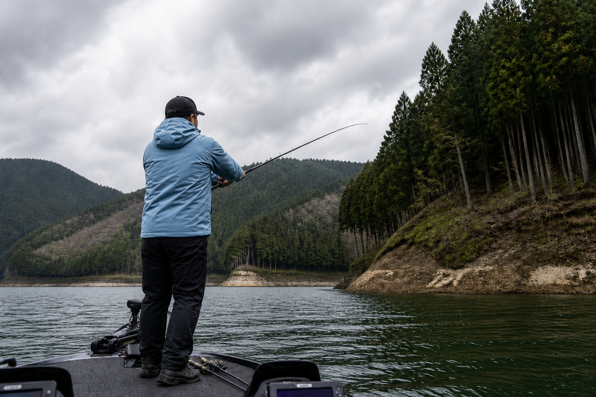
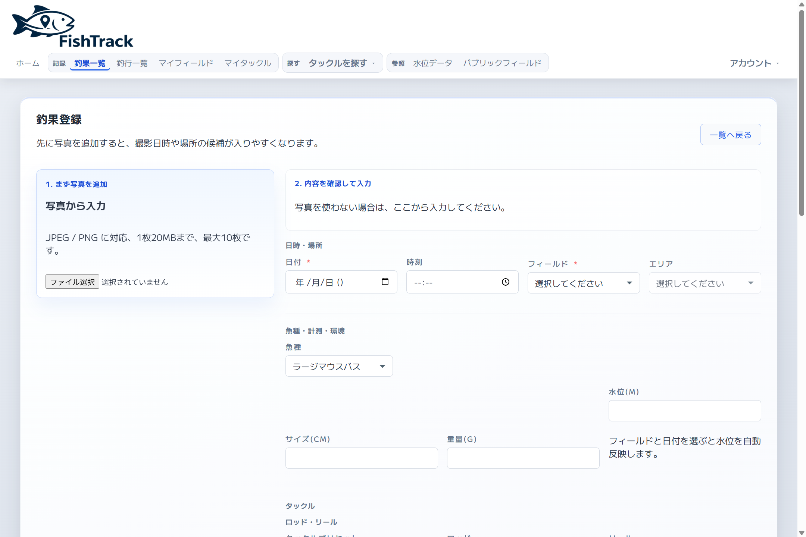
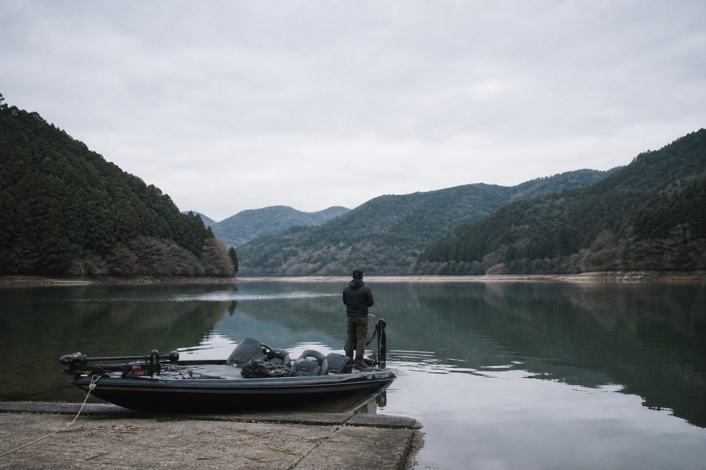
過去の釣行・釣果を振り返り、次の行き先や釣り方を考える材料にできます。

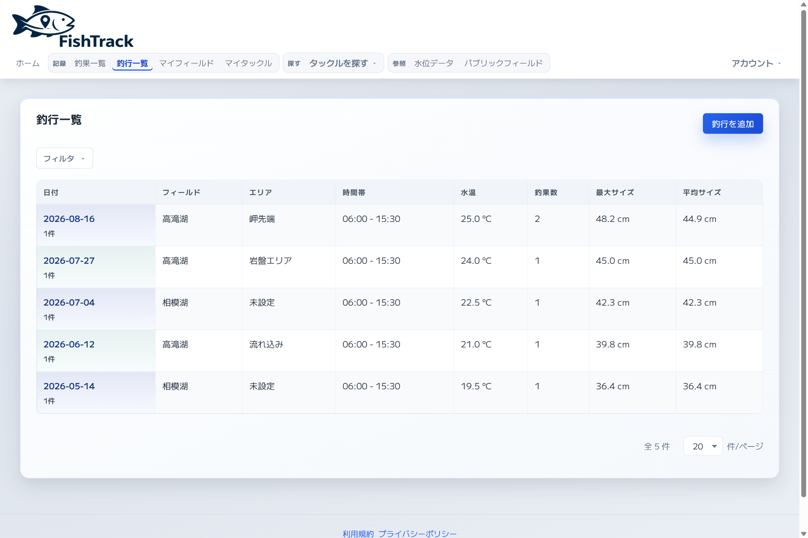
釣果と写真、時間と場所。スマホからでも入力しやすく、その日の記録を逃さず残せます。


その日の釣行を記録にまとめ、フィールドや日付で見返せます。
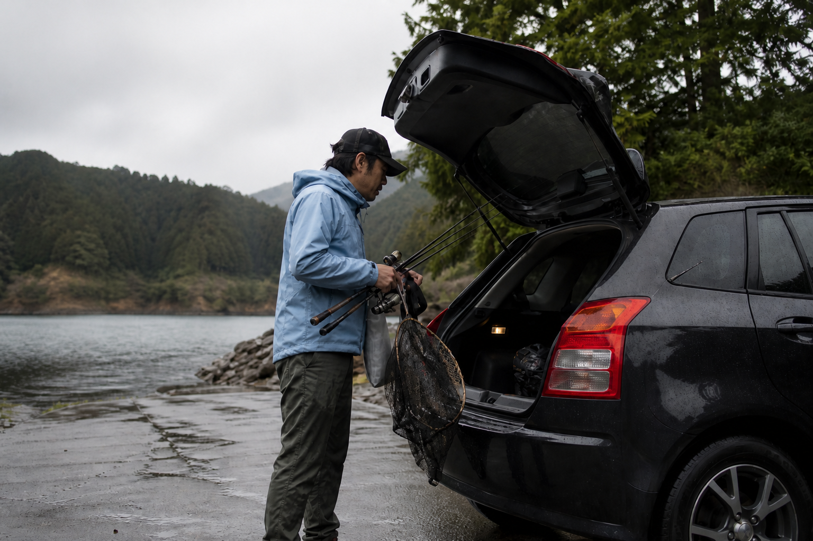
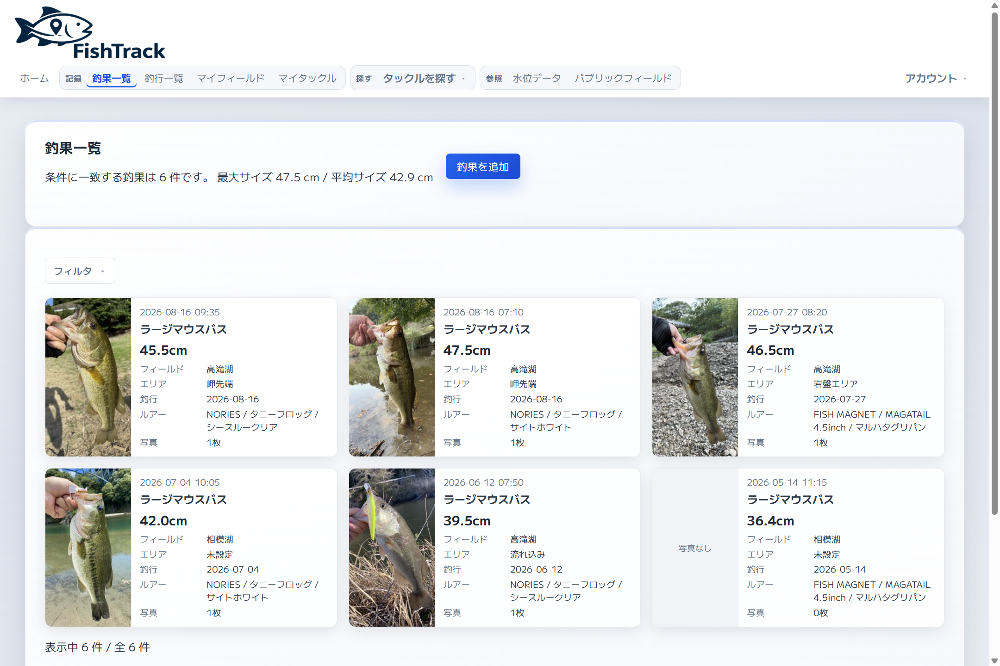
写真・サイズ・フィールド・時刻に加え、使ったタックルやルアーも記録できる。写真から日時や場所を入れることもできる。
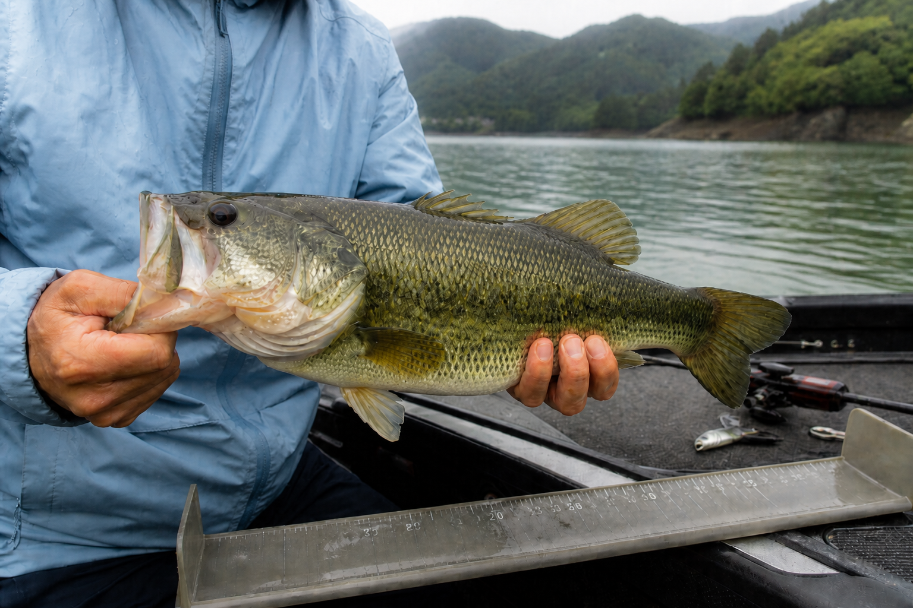
その日の釣行として記録をまとめ、フィールドや日付で見返す。
よく行くフィールドに自分のポイントを残し、地図で確認できる。ポイントごとに釣果も残せる。
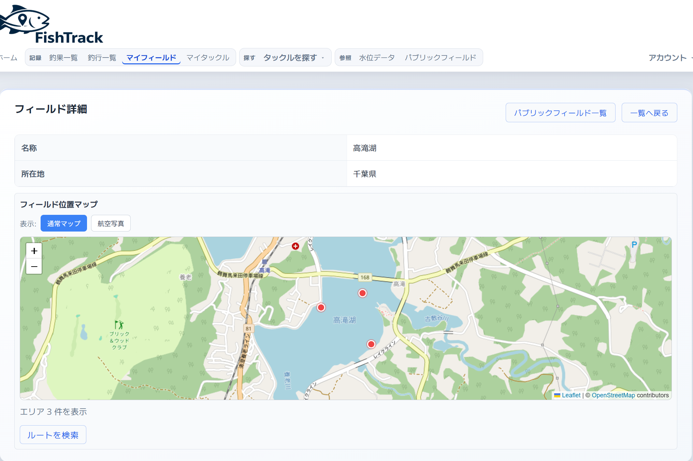
持っているロッド・リール・ルアーを記録し、釣果と結び付けられる。
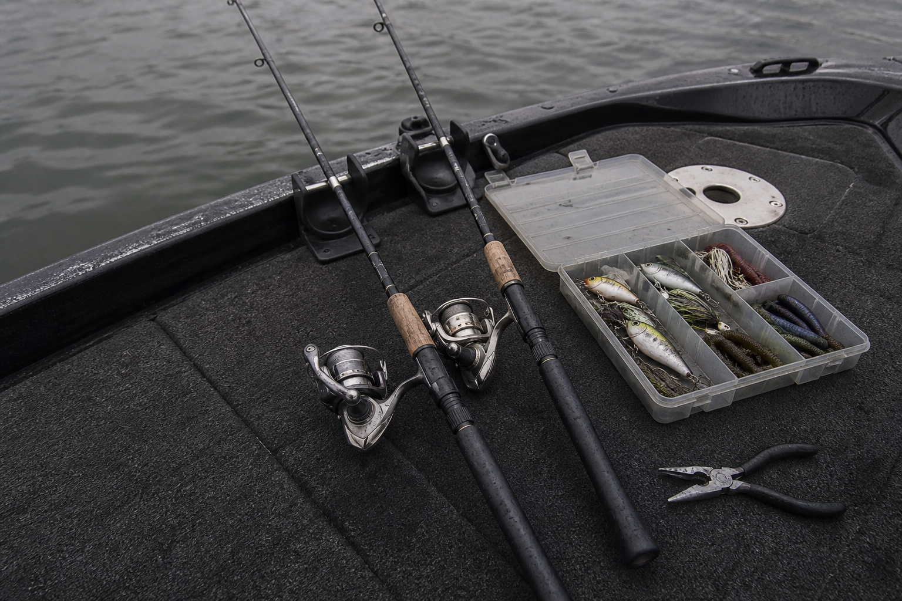
ロッド・リール・ルアーを型番から探せる。登録情報は随時更新中です。
登録件数：ロッド 210件／リール 37件／プラグ 18件／ワーム 7件
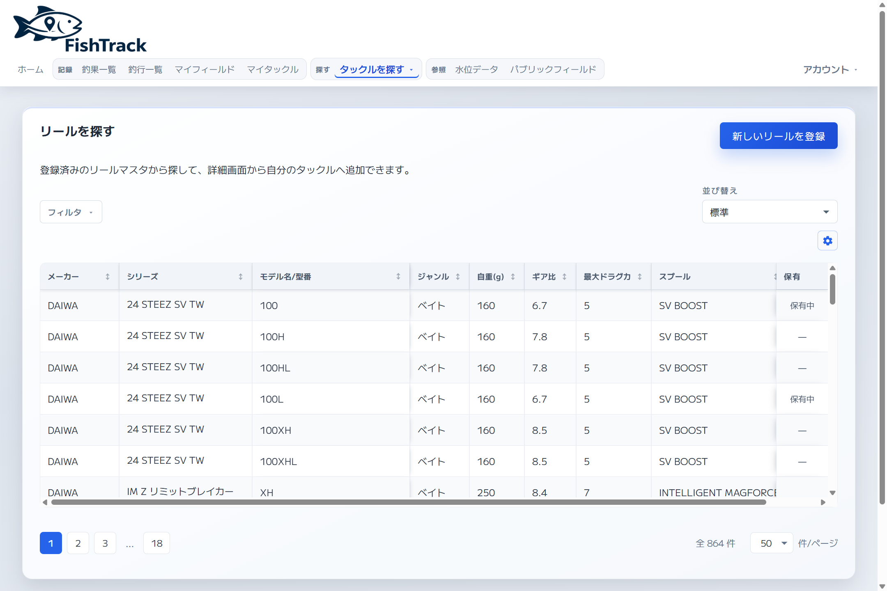
よく行くフィールドの水位を見て、行く前の判断に使う。
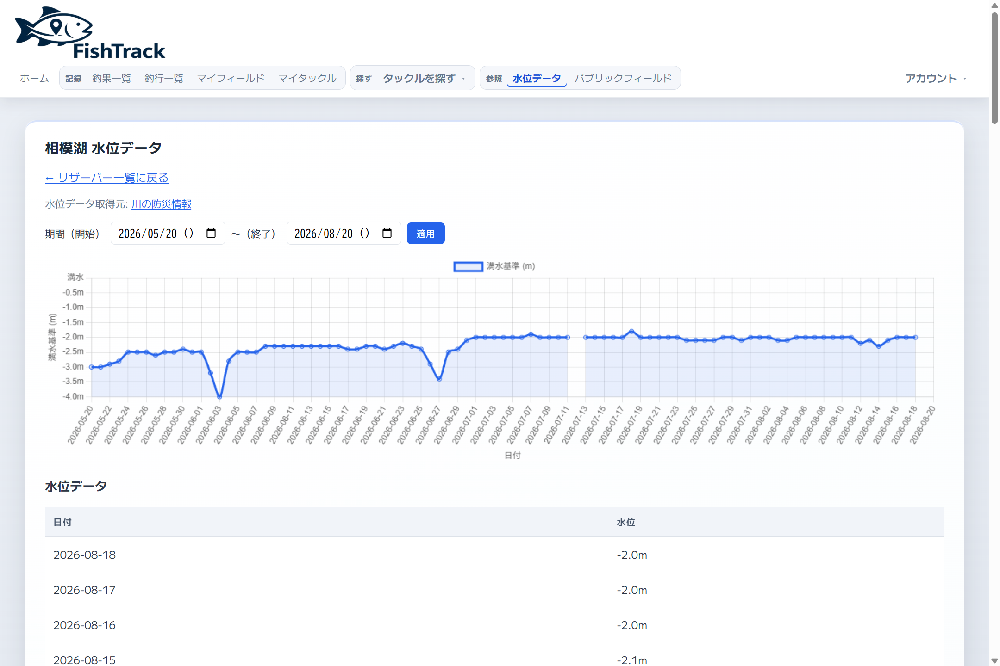
釣果の詳細に天候が自動で反映され、水温とあわせて残る。次の判断にも使える。
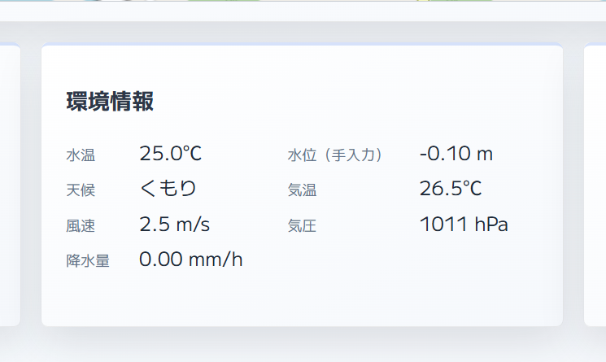
その年の釣果から、サイズのBEST5を振り返れる。
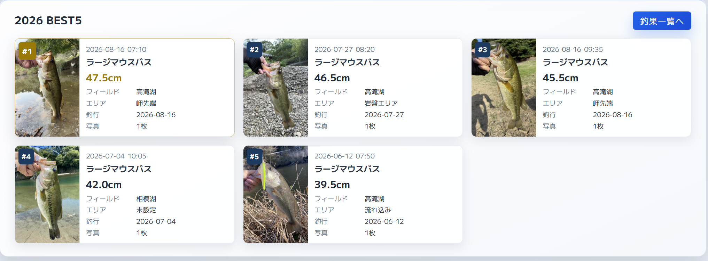
今後の拡張予定
過去の釣果や釣行記録をもとに、AIがおすすめの釣行プランを生成する機能を公開予定です。